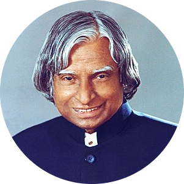

|  | APJ Abdul KalamPersonal Page Avul Pakir Jainulabdeen Abdul Kalam was an Indian aerospace scientist who
served as the 11th president of India from 2002 to 2007.
|
| Period | Work |
|---|---|
| 1992-2002 | 1st Principal Scientific Adviser to the Government of India |
| 2002-2007 | 11th President of India |